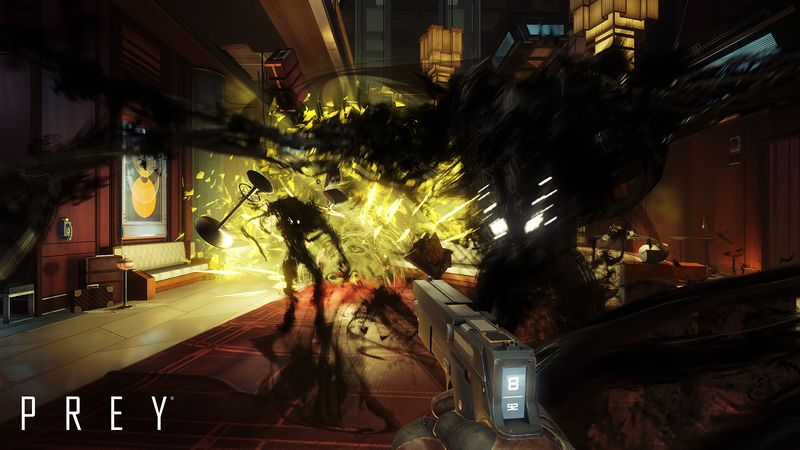
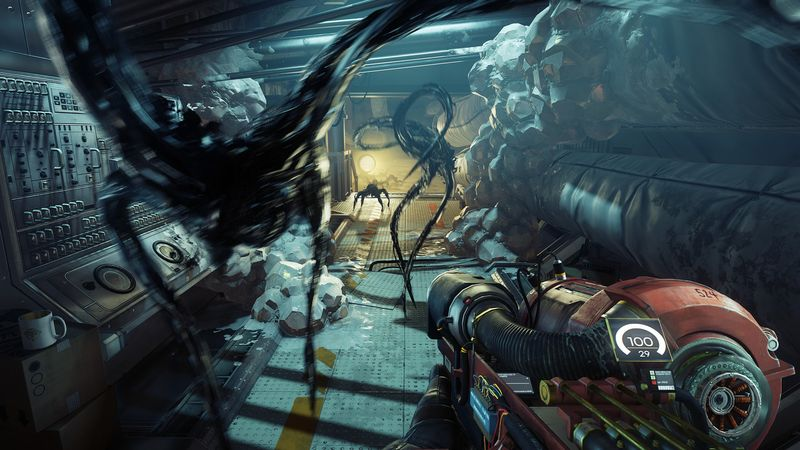

The thirty-second version
System Shock's ghost is in the coffee cup.
The mimic ate my in-game keys. And also, somehow, my real ones.
Prey is the closest we've had to a proper immersive sim in a decade, and it flew under most people's radar because Bethesda named it after a completely different game. Talos I is a hand-built puzzle you can approach through the vents, the crawlspaces, or by physically stacking chairs. If any of that sounds fun, buy it.
Okay, what is this thing?
You wake up on a space station. A coffee cup on the desk turns into a shrieking spider and lunges at your face. That is the first minute. From there it is your job to work out what the hell Talos I is, why your brother is on the intercom, and whether the chair in the corner is a chair. Answer: it might not be. Panic accordingly.
Under the mimic gag sits a proper Arkane playground. Neuromods buy powers, so you can be a hacker, a wrench-lugger, or eventually, a chair. The GLOO cannon glues enemies in place and doubles as a set of stairs, and every locked room has three ways in if you're patient. It's Deus Ex on a space station, and it's the only game the Tactician has ever called 'a decent effort'.


Why it escaped the group chat
- Talos I is one interconnected station you learn like a house, with shortcuts that open up as you go.
- Neuromods let you buy alien Typhon powers, which then flag you as a threat to the station's turrets. Choices matter.
- The GLOO cannon is a legitimate traversal tool and possibly the best gadget in any 2010s shooter.
Three dads enter
01
Dad Who Skipped the Tutorial
Genuinely tense in a way I wasn't ready for.
I shot a chair. Then a mug. Then a fire extinguisher, just to be safe. Somewhere around hour four I stopped panicking, and around hour eight I stopped playing, because the horror element wore me down. Fair call. The station is beautiful, but it's genuinely tense, and the sessions run long by my standards.
02
The Descent Guy
Free-form 3D level design I've been waiting for.
I clocked the free-form spatial design in about ten minutes and then wouldn't shut up about it. My exact words: 'verticality that actually means something, again.' I mapped out a wrench-only pacifist route on my second run because of course I did. This is the exact kind of thing my brain was built for.
03
Normal-ish Dad
The last stretch sags, but the middle sings.
I finished it once, on the recommended difficulty, and I think that's the correct dose. Talos I is a great place to get lost in, the mimics stay scary for longer than you'd expect, and the story lands. I do note that the last few hours drag a bit, and that saving before every door isn't paranoia, it's policy.
Who it is for and what to watch
Invite these people
- Anyone who misses proper immersive sims and has ninety spare minutes at a time
- People who like games that reward reading every email in every office
- Dads who want a horror-adjacent game they can actually pause safely
Dad caveats
- The opening hours are stingier with tools than the later game
- The end stretch is weaker than the rest, which is a well-known complaint
- You will inspect every coffee cup for the rest of your life
Receipts
Two of us finished it on PC, one across two full runs with different power builds. The third pushed through about eight hours and switched to something with less indoor lighting.